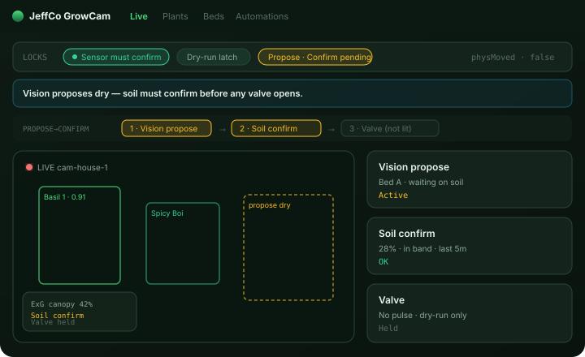
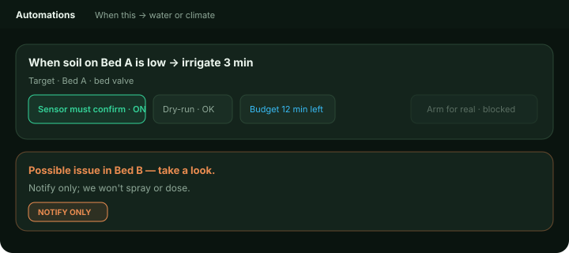
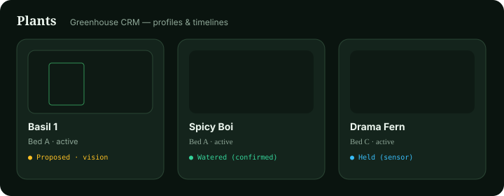

GrowCam
Greenhouse vision console that proposes from the camera and only waters when sensors confirm.
For growers who want plant profiles, bed plumbing, and English automations — not a climate-computer maze.

What it does
GrowCam watches beds and plants with a live feed, bed outlines, and plant boxes. You name plants, keep timelines, and attach water/climate to beds.
Vision can suggest water-stress or canopy events. Those stay proposals until soil (or another confirm path) agrees. Dry-run rehearses rules without opening valves.
Day one surfaces plant detect, canopy, photos, and plant tracking where the platform allows. Disease stays notify-only — look, don’t spray.
Automations are plain English: when this → notify, irrigate (sensor-confirm ON), or fan. Beds own plumbing; plants own the story.
Capabilities
Day-one surface vs Advanced / gated — from Clarity GH Pages pack.
Day-one surface
Live aisle view
Day oneBeds + tracked plants, detection sheets, propose banners when vision thinks dry.
Plants CRM
Day oneNicknames, profiles, timelines, attention chips.
Beds / plumbing
Day oneZones where valves, soil, and climate attach.
English automations
Day oneNotify, soil-confirmed water, fan; dry-run + budget on the card.
Wizard first-run
Day oneFeed → beds → plant/canopy proof → optional soil → one safe action.
Advanced / gated
More vision workers
AdvancedWeed, ripeness, vision water-stress, growth stage, lookalike re-ID, time-lapse, NDVI/thermal.
Sensor-confirm OFF
AdvancedOnly in Advanced (warned + audited).
Disease / pest
NotifyNotify-only; no spray/dose CTA in v1.
How to use it
First-run (wizard)
Add a feed
Camera or practice file.
Draw beds
Mark where plants and plumbing live.
Catch a plant or canopy
Continue locked until proof.
Optional soil sensor
Recommended; real irrigate stays blocked without confirm.
One safe action
Irrigate or fan (exclusive), or Notify me / Skip; dry-run required. Finish never implies a valve opened on dry-run.
Daily loop
Open Live
Scan proposes, holds, and plant catches.
Name newcomers
Give them a name or open profiles.
Check Beds
Soil last-good and valve state.
Arm or edit Automations
Dry-run once, then Arm for real when ready.
Skim Activity
Proposed / Held / Dry-run / Watered (confirmed) stay distinct.
Honesty / trust
Clarity GH Pages honesty — elevated from crown polish. No fake water.
- No fake water. Vision proposes; sensors confirm. Never imply a valve opened on vision alone.
- Dry-run ≠ wet. Rehearsal copy never says “Watered,” fills valve icons, or decrements budget.
- Held is visible. Waiting on soil / stale sensor / out of band → held/blocked chrome, not “Irrigating…”
- Plant-target water still runs on the plant’s bed valve unless a micro-valve map exists.
- Disease = notify only — no spray, dose, or chem CTA.
- Activity distinguishes Proposed · Held · Dry-run · Watered (confirmed).
Screenshots
Brochure frames elevated from crown UI mocks — Propose→Confirm, Automations honesty strip, Plants CRM.


Never collapse propose into watered.
Get started
Wire module path / docs when Builder queues the Pages deploy.